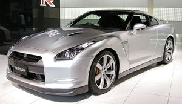
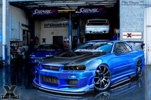

Nissan Skyline/Nissan GT-R
 De: La Frikipedia, la enciclopedia extremadamente seria.
De: La Frikipedia, la enciclopedia extremadamente seria.
| De la serie vehículos de ayer y de hoy:
|
| Nissan Skyline/Nissan GT-R
|
| 
|
| esta vez los japos no se cortaron
|
|
| Marca
|
Nissan y Gran Turismo¬¬
|
| Modelo
|
GT-R y Skyline
|
| Antigüedad
|
igual que el Mustang
|
| Velocidad
|
305km/h
|
| Precio
|
100.000€
|
| Mano
|
Es nuevo
|
| Combustible que usa
|
gasofa.
|
| Colores
|
plateado si no te quieres quedar ciego
|
| Tipo
|
Superultramegamasterdeportivo
|
| Plazas
|
quatre
|
| ¿Se puede tunear?
|
Solo en el Skyline antiguo si no, golpe de remo
|
| Notas
|
Es japonés, es decir, una copia de un Lamborghini
|
El Nissan Skyline/Nissan GT-R es un coche del país de SATO deportivo creado por Nissan y ayudado por Gran Turismo ¡es de ser inútil! y también destaca por estar en el Super GT y por ser un coche fácilmente tuneable (fácilmente no es que quede guapo), por favor: NO LO HAGAS COMO EL DE LA AFOTO DE MÁS ABAJO, hazlo como y el Nissan blanco derrapando de más abajo, pero ese lo lleva un profesional.
Versiones
- Nissan Skyline: Fue un coche medio deportivo que apareció en los años '50 y que andaba a unos 270km/h a partir de los 90' en la versión GT-R y que los canis japoneses y americanos se dedicaron a tunear y estropear, la mayoría acabaron fostiados contra el muro como venganza kamikacera disminuyendo el número de canis japoestadounidensemente hablando, oye, este coche es un todo un héroe. También es famoso porque en el Gran Turismo posiblemente sea el coche mas repetido, cabe destacar que es uno de los coches que más le gustan a Jeremy Clarkson y que en el D1 GP es el gran dominador con la versión de 4p.
- Nissan Skyline C10: Fue el tercer GT-R y es del 68', se podría calificar de copia a la japonesa de un Mustang, como su sobrenombre indica, llevaba un 2.0 V6 que no pasaba de 160km/h, de este lo que se puede decir esque era bastante feo, como todos los coches japoneses hasta los años 90s.
- Nissan Skyline GT-R R32: Una de las versiones que aparecieron en los 90' y que ahora en Japón es una leyenda, los japos lo adoraban y adoran como si fuera el dios ゼウス, este coche se hizo principalmente famoso por el Super GT, que creías? que los Nissan salieron alguna vez del pais de los amarillos? pues no.
- Nissan Skyline GT-R R33: Fue el sustituto de la leyenda de arriba pero los japos le hicieron tanto caso como a una たわごと, por:
- ser muy parecido al R32 por fuera
- no estar en las competiciones
- no correr más que un R32
- ser una copia barata (esto es demasiado hablando de coches o tecnología japonesa) de un Pontiac o un Mustang
- Nissan Skyline GT-R R34: Como Nissan no podía cagarla otra vez, los japos tiraron de originalidad y crearon un nuevo coche que tenía una imagen
má bonitica más estilizada que los anteriores que habían hecho, no les salió muy bien pero en Japón consiguió un adoración superior a la del dios ゼウス.
 ...este no. Este es
cani canísimo
Nissan Skyline
El Skyline GT-R desapareció por no tener futuro por que hacia falta un cambio hacia lo moderno y se dividió en Skyline y GT-R, ¿A que no te lo esperabas? El Linea en el cielo es la versión mas super pija o'sea elegante pero también es muy rápido y descontrolable (un pijo + un Nissan a 240km/h = ostiazo grande) + el pijo se le estropea el móvil = risas descontroladas. En Aspaña y EE Juntitos se vende como Infiniti G37, y cuesta 10,000€ más que en Satolandia.
Nissan GT-R
Como ya te explique antes , pero ahora vamos a hablar del otro coche, del deportivo, el de 400cv y una punta de 310km/h, este coche de 100.000€ se hace llamar Nissan GT-R, la realidad es que su verdadero nombre es Dos-Tres R35 (dos-tres en japones es ni-san) y con esa vista compacta del exterior, el motor no falla tampoco.El cuadro de mandos de este coche está hecho por Poliphony Digital, o lo que es lo mismo, el Gran Turismo 5. Aún así tiene una cosa extrañísima:
- Nissan GT-R Spec-V: Es una versión del coche de arriba, solo que con 10kg menos de peso (oooooh...), un poquitiquico más de velocidad punta, color negro y los asientos de atrás arrancaos, no destaca gran cosa pero se deduce que al usar uno de estos aparece en las personas una dolencia derivada de la Chumajer me la pela (propia de los conductores de BMW) llamada Yamamoto me la pela, que consiste en fostiarse cada dos semanas y descansar en invierno. También destaca que cuatro modificaciones que tiene hacen que el coche cueste el DOBLE que la versión normal, o sea, 200.000€. Sobre todo vamos a destacar que está barriendo en el Nürburgring grande.
- Nissan GT-R Black edition:
Es una versión especial para negros, con incrustes de oro Es una versión que sacaron en el 2012 con 100 CV más de potencia.
- Nissan GT-R Time travel Edition: La versión más brutal, hace caso a la teoría de la relatividad del gran científico, el eminente Pocholo Martínez-Bordiú y tiene un sistema de ocho turbos con inyección que le hacen alcanzar los 10.000km/h en 2.5 segundos provocando que se te vaya la sangre a la cabeza en grandes cantidades haciendo que alucines con estar en la época de la historia que te imagines en ese momento. Incorpora un librito que explica como funciona, este modelo es secreto y saldra a la venta el año que viene.
- Nissan GT-R Nismo GT3: Es la versión de carreras que usan los de Nissan en las 24 horas de Nürburgring.
Curiosidades
Es un coche muy cuadrado, no tiene nada de curioso, ah, que esto se refiere a paradojas, pues ahí van unas cuantas:
- En la Wikipedia lo llaman automóvil deportivo (al GT-R), eso es meterlo en el mismo grupo que un Honda S2000 ,u Peugeot 206 rc o un Mini descapotable. (¬¬)
- Corre más la versión de calle que la de competición, y aun así ganan.
 Transporte Transporte 
|
|
|
Autor(es):
- Sakimaki
- Generibot
- Alexelyeyo
- Jamesmayslx
Frikipedia 2005-2016, Licencia
GFDL 1.2 - Extraído por FrikiLeaks